Laporan Praktikum 7
Mata Kuliah: Pemrograman Web
Jardel Poliviera
27 Mei 2026
Selesai
1. Konfigurasi Database
Buka file .env kemudian ubah konfigurasi database sebagai berikut:
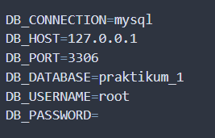
2. Migration
Migration adalah fitur Laravel yang digunakan untuk membuat dan mengelola struktur database menggunakan kode program. Migration memudahkan developer dalam:
a. Membuat tabel
b. Mengubah struktur tabel
c. Menghapus tabel
d. Versioning database
Membuat tabel products menggunakan migration dengan perintah:
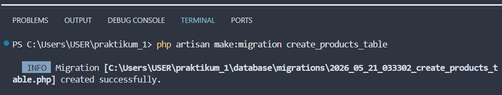
File migration akan berada pada folder database/migrations:
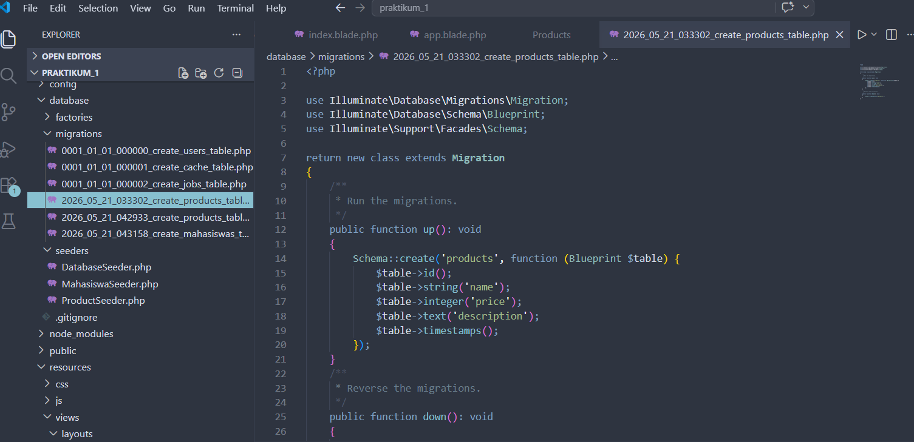
Menjalankan migration menggunakan perintah php artisan migrate, setelah dijalankan perintah tersebut maka secara otomatis tabel products akan terbentuk secara otomatis.
Catatan tambahan:
- php artisan migrate:rollback digunakan untuk membatalkan migration.
- php artisan migrate:fresh digunakan untuk menjalankan ulang seluruh migration.
3. Seeding
Seeding digunakan untuk mengisi data awal ke database. Seeder sangat membantu saat: a. Pengujian aplikasi b. Membuat data dummy c. Menyiapkan data awal system.
Membuat Seeder. Jalankan perintah berikut:
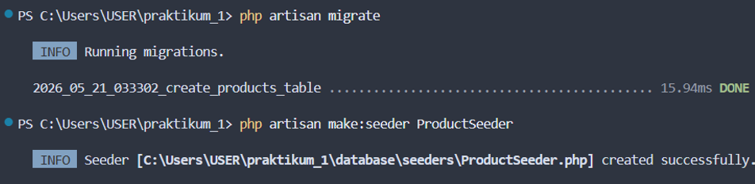
Membuat Data Seeder. Buka file ProductSeeder.php, kemudian ubah menjadi:
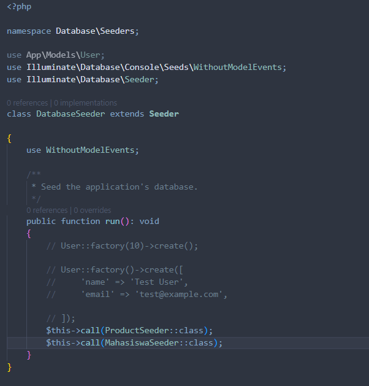
Menjalankan Seeder. Tambahkan pemanggilan seeder pada file DatabaseSeeder.php:
$this->call(ProductSeeder::class);
Selanjutnya jalankan perintah php artisan db:seed. Jika ingin menjalankan migration dan seeding bersamaan jalankan perintah berikut:
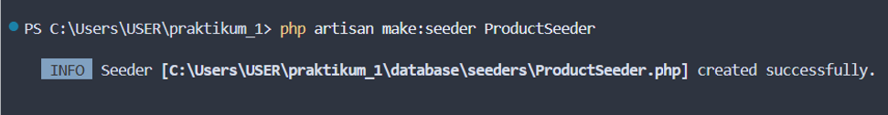
4. Routing
Routing digunakan untuk menentukan URL dan respon yang diberikan aplikasi. Semua routing web berada pada file: routes/web.php.
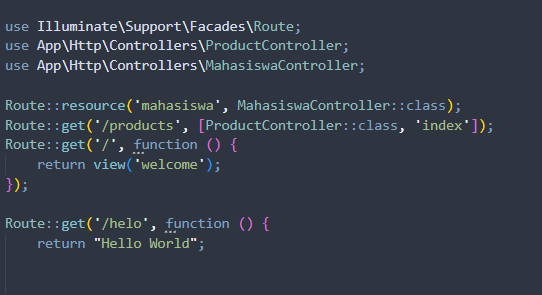
5. Model
Model digunakan untuk berinteraksi dengan database. Laravel menggunakan Eloquent ORM untuk mempermudah manipulasi data. Struktur Model Silahkan buka file Product.php:
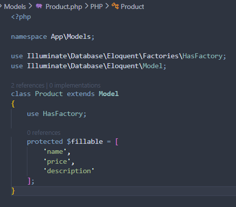
6. Controller
Controller digunakan untuk mengatur logika aplikasi. Controller menjadi penghubung antara:
a. Model
b. View
c. Request user
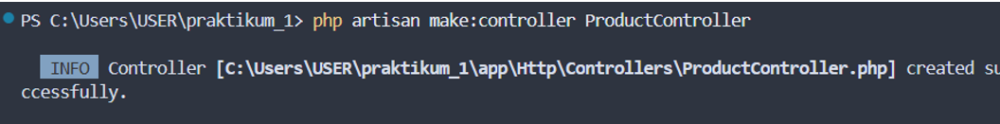
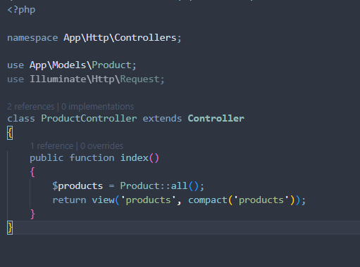
7. View & Layout
Buat folder layouts di dalam resources/views/. Lalu buat file app.blade.php di dalamnya dan isi dengan kode ini:
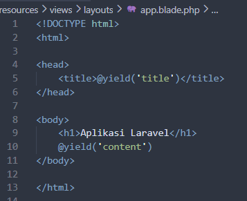
Buat View Products. Buat file products.blade.php di dalam folder resources/views/, lalu gunakan layout tadi:
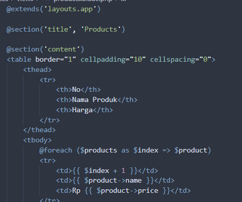
Hasil outputnya adalah:
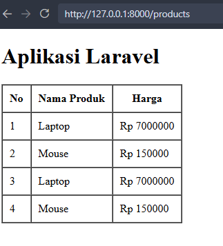
Detail Praktikum 7
- Konfigurasi DB
- Migration & Seeder
- Routing
- MVC (Model, View, Controller)